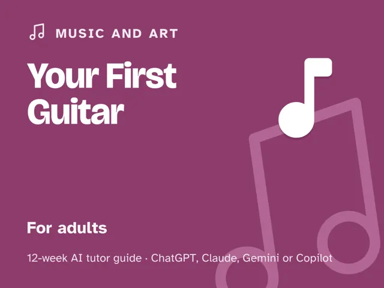
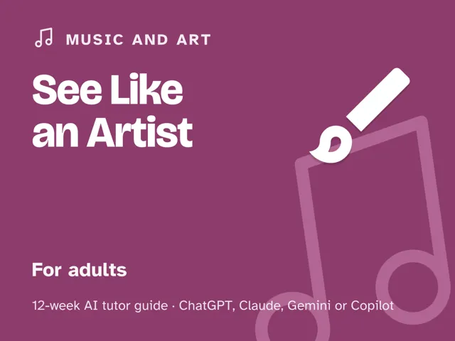

See Like an Artist
$29Instant download: a PDF to read, a browser copy, and the AI-tutor file you hand straight to any AI assistant.Buy it on Etsy →
Take the free placement check first: 15 minutes, and it names the week to start at.
A masterclass you actually finish, and the one that finally proves you were never the problem. "I can't draw" is almost always a seeing problem, not a talent problem: your hand faithfully draws the symbol in your head ("an eye looks like this") instead of what's actually in front of you. This 12-week masterclass retrains your perception (edges, negative space, proportion, relationships, light and shadow, perspective, texture, and gesture) so you draw what's in front of you instead of copying step-by-step tutorials. Photograph your sketch beside your reference and the AI tutor coaches the gap: what was really there versus what you drew, and why your eye skipped it. No talent, no steady hand, and no fancy supplies required.
Format: a deep digital guide: 12 ready-to-run, fully scripted ~60-minute sessions. You lead one session a week; every step is timed and written out for you, with the AI-tutor instructions built in, so no drawing or teaching expertise is needed. A pencil, an eraser, paper, a phone camera, and an ordinary lamp are all you need.
What you get
- 12 deep weekly sessions (~60 minutes each), every one built the same way: a plain-language perception concept, a concrete worked example, a minute-by-minute session plan with the AI-tutor prompts built in, a "show me" checkpoint that proves your seeing sharpened, common mistakes to watch for, and practice to lock it in.
- A "Never used an AI chat assistant? Start here" onboarding that takes a complete beginner from zero to ready in about five minutes. Works with any free AI assistant, no paid plan needed.
- An orientation that takes talent off the table and names the one rule that changes everything: draw what you actually see, not what you think a thing looks like.
- Four rescue prompts in the front matter: for when you're stuck and your sketch "looks nothing like the thing," for when the AI starts telling you how to draw instead of coaching your eye (it keeps the AI from drawing for you or handing you a formula), for when it felt too easy and you want your seeing pushed deeper, and a quick quiz that checks you truly saw it.
- A before-and-after pair: your week-1 and week-12 drawings of the same subject, so you can see exactly how far your eye traveled.
The 12 weeks
- Drawing Is Seeing, Not Talent: the perceptual shift
- Edges: Draw What's Actually There
- Negative Space: Draw the Gaps
- Proportion: Measuring by Eye
- Relationships & Sighting Angles
- Light & Shadow: Form From Value
- Perspective as Seeing Depth
- Texture & Detail That Reads
- Gesture: Capturing Life Quickly
- Project Week I: A Careful Drawing From Life
- Project Week II: Render Something You Love
- Demo Day & the Artist's Eye
Who it's for
Adults who are sure they "can't draw" and assume it's an inborn gift they missed. If you can hold a pencil and point a phone camera, you're ready; no experience, no natural talent, and no art supplies beyond a pencil, an eraser, and paper assumed.
Why this instead of a free chatbot
Ask a raw chatbot "how do I draw a face" and it hands you a symbol to copy, the exact habit that keeps people stuck. This pack ships the method a chatbot lacks: a real progression through the perception skills artists actually train, drawing from life instead of tutorials, and a tutor set up to critique the gap between what was there and what you drew rather than praise you or draw it for you. You leave with the habit of drawing what you actually see, not one more tutorial to copy.
Format & honesty note
This is a masterclass in structure and depth, framed like the drawing class you wish you'd taken, but it's an honest digital guide, not a live course or a certification. Each week you lead one fully scripted ~60-minute session: the concept, the example, the timing, and the AI-tutor prompts are all written out for you, so no expertise is needed going in. No hype, no "unlock your hidden genius," just the trainable skill of seeing, taught in order.
FAQ
- Do I need any experience or talent? Neither. Week 1 exists specifically to show you that "I can't draw" is a seeing habit you can retrain, not a gift you were born without.
- What supplies do I need? A pencil, an eraser, paper, a phone camera, and (from Week 6) an ordinary lamp you already own. That's the whole kit; this is about how you look, not what you buy.
- Which AI does it use? I've never used an AI chat assistant. Any modern AI assistant that can look at a photo you upload works: ChatGPT, Claude, Copilot, or Gemini. The free version of any of them is enough (free plans may cap photos per day); no paid plan needed. The guide opens with a "Start here" section that walks a complete beginner through setup in about five minutes, then every session gives you the exact prompt to start it.
- Works wherever you live. The guide is written in US English, and every session tells the AI to use your country or region for spelling, units, and examples.
- Will it just tell me my drawing is good? No, that's the point. The tutor is set up to skip praise, name the specific gap between what you saw and what you drew, and give you one looking exercise to close it.
- Is this drawing from imagination? No. You draw real objects and scenes in front of you, which is how seeing gets trained. Drawing from imagination is a separate skill this course doesn't teach, but an honest eye is the foundation it builds on.
- Refunds? Standard marketplace refund policy applies.
$29Instant download: a PDF to read, a browser copy, and the AI-tutor file you hand straight to any AI assistant.Buy it on Etsy →